All 11 chapters · timelines & diagrams · model answers · past-paper pointers
Built from the BCSE 2025 and 2024 History question papers (Final I). Every question in both papers is solved inside.
How to use: Orange tags show where a topic appeared: P25 Q2a = 2025 paper question 2(a); P24 = 2024 paper. “Sec A” = the MCQ / fill-in / match / true-false part (Q1). Green boxes are solved questions with the mark value in brackets and the key answer in red. Purple tag diagram = a picture or diagram used in the paper. Chapters: 1 Indus Valley · 2 Vedic religion & Buddhism · 3 Age of Exploration · 4 Colonialism & Indian nationalism · 5 Historiography & culture · 6 Zhabdrung & the nation-state · 7 Bhutan & British India · 8 The monarchy & the Fourth Druk Gyalpo · 9 The Fifth Druk Gyalpo & the Royal Family · 10 Constitution, GNH & environment · 11 Civil society & community.
⚠ Read this first — limits of these notes I had the 2025 and 2024 papers only (no 2023 paper, no textbook), so a few answers rest on reasoning rather than the official key. They are marked (check). (a) 2024 Q1a(vi) triangular-trade options: none of A–D matches the standard triangle (X slaves, Y raw materials, Z manufactured goods); C is closest. (b) 2025 Q1a(xii): both A (I & III) and B (II & IV) pair one tangible with one intangible item. (c) 2025 Q1a(iii) order of the Crown Prince’s activities could not be checked; B is a best guess. (d) 2024 Q3a (prophetic elements) is textbook-specific. (e) 2024 Q1a(v): B “Awakened One” vs D “Enlightened One” are both used. Always prefer the wording of your own textbook and your teacher’s key.
How marks are given (both papers)
One point = one mark. “Mention THREE points” [3], “FIVE points” [5] — write exactly that many, each on its own line, each a clear fact + short explanation. Extra points earn nothing.
“Do you agree / Do you think… Justify”: begin with your stand (Yes / No), then give the reasons asked for. Opinion marks need reasons from the syllabus.
“As a… (Mughal Emperor, advisor, prayer captain, 16th Desi)…”: answer in role using the history you have learned (“I would…”).
“What would have happened if…”: cause → effect points, written as consequences.
Case study / source: use names, dates and details from the passage in every answer.
Do not write your name, school or village (answer may be cancelled). Circle only ONE letter in MCQs.
Paper pattern (2024 & 2025)
Part
Content
Marks
Sec A Q1(a)
MCQ (15)
15
Q1(b)
Fill in blanks (7 in 2024; 5 in 2025)
7 / 5
Q1(c)
Match column I with II
5
Q1(d)
True / False (7 in 2024; 5 in 2025)
7 / 5
Q1(e)
Short answers (1–3 marks each; five parts in 2025)
6 / 10
Sec B Q2–Q7
Answer ALL: long answers of 2–5 marks (4–5 points)
60
Topic map: where each chapter appeared
Chapter
2024
2025
1 Indus Valley
Q1a(xiii), b(iii), e(i), Q2b
Q1e(v), Q6b
2 Vedic & Buddhism
Q1a(v,xv), Q4a, Q5a
Q1a(xiv), e(iv), Q7b,c
3 Exploration
Q1a(vi,vii), b(vii), d(iv)
Q1a(xv), c(i,v)
4 Colonialism
Q3c
Q7a
5 Historiography
Q1a(xi), b(ii), d(vii), Q4b
Q1a(xii,xiii), b(e), d(iv), Q6a
6 Zhabdrung
Q1a(iv,xiv), b(vi), e(iii), Q2a, Q6a, Q7a
Q1a(i,vii,viii), b(c,d), d(iii), Q2a
7 British India
Q1a(iii,x), c, d(iii), Q3b
Q1a(iv,x), b(a), Q2b–d, Q3b
8 Monarchy
Q1a(i), d(i), Q2c, Q3a, Q6b,c
Q1a(ii), e(i,iii), Q3a, Q4a
9 Fifth King & Family
Q1a(ii,ix,xii), b(vi), Q5b, Q7c
Q1a(iii,vi,ix), c, d(ii,v), e(ii), Q4b
10 Constitution & environment
Q1a(viii), d(v,vi), Q7b
Q1a(v), b(b), d(i), Q5a,b
11 Civil society & community
Q1a(ix), b(iv,v), e(ii)
Q1a(i), d(ii), Q5c
Repeated every year: Zhabdrung & Choe-sid / Kathrim • Bhutan–British treaties • the Fourth Druk Gyalpo (selfless leader, 2003) • His Majesty’s programmes • Indus Valley drainage / town planning • Buddha’s life • historiography • the Constitution & environment article.
1 · Indus Valley Civilisation
P24 Q1a(xiii),b(iii),e(i),Q2b · P25 Q1e(v),Q6b
Key ideas
Time & place: c. 3300–1300 BCE (mature phase c. 2600–1900 BCE) along the Indus and Ghaggar–Hakra rivers in present Pakistan and north-west India. Main sites: Harappa (found 1921), Mohenjo-daro (1922), Lothal (dockyard), Kalibangan, Dholavira. It was a Bronze Age urban civilisation.
Town planning: raised citadel in the west (Great Bath, granary) and a lower town with houses; streets cut each other at right angles; standard-size bricks (1:2:4); wells in houses and streets; public Great Bath at Mohenjo-daro. P25 Q6b
Drainage & sanitation: every house had a bath-room and drain; house drains joined covered brick drains along the streets, with manholes and soak pits; waste bins stood outside shops/houses and were emptied. This kept the town clean and healthy — “effective town planning / waste management”. P24 Q1b(iii)P25 Q1e(v)
Religion: no big temples found. Evidence: terracotta mother goddess figures, the “Pashupati” seal (a seated, yoga-like figure surrounded by animals), worship of trees (pipal), animals (bull) and water (Great Bath for ritual bathing). So “worshipping in church” is wrong. P24 Q1e(i)
Plan of an Indus town: citadel (west) and a grid-pattern lower town with covered drains.
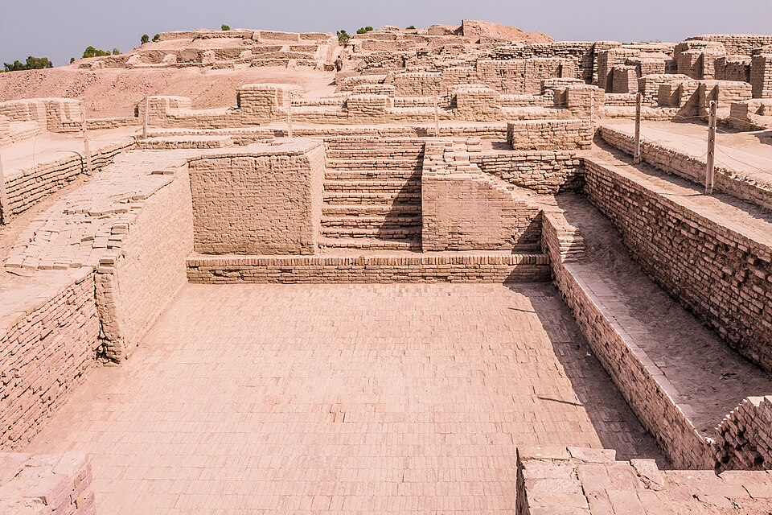
The Great Bath at Mohenjo-daro, in the citadel of the Indus city. Photo: Soban, CC BY-SA 3.0, Wikimedia Commons.
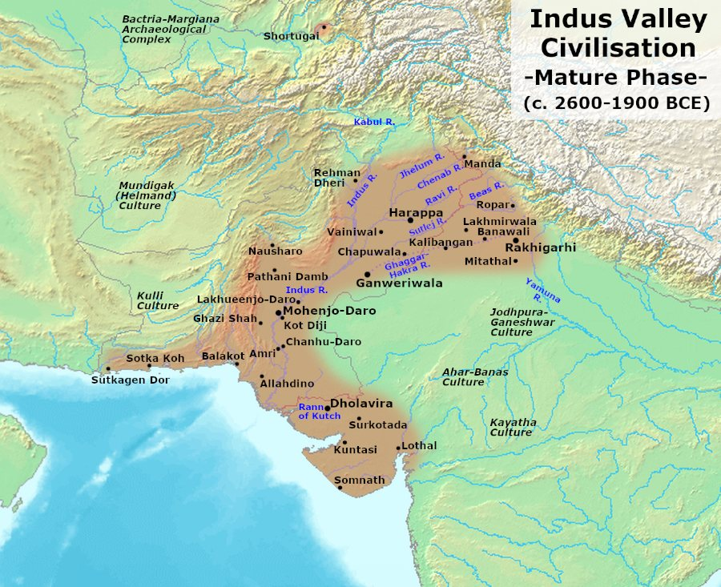
Map: Indus Valley Civilisation, mature phase (c. 2600–1900 BCE). Photo: Avantiputra7, CC BY-SA 3.0, Wikimedia Commons.
Solved questions
P24 Q1e(i) [1] “The religious life of the Indus Valley shares similar features with Buddhist practices in Bhutan.” Do you agree? Yes. The Indus people worshipped nature — trees, animals and water — and the “Pashupati” seal shows a meditating (yogic) posture; Bhutanese Buddhism also practises meditation and respect for sacred trees, rivers and animals. (One reason is enough.)
P24 Q2b [4] FOUR features of the Indus Valley Civilisation evident in my community:
Planned town / roads: Thimphu’s organised streets and zones.
Strong baked/durable buildings: houses of bricks, cement and stone.
Trade & markets: weekend markets, weights and measures, barter/seal-like stamps on goods; also granaries/storage (community storehouses, dzong granaries).
P25 Q1e(v) [2] Effectiveness of the drainage system and TWO solutions: Effective because covered drains stopped flooding, sewage and disease, and house drains were linked to street drains with manholes for cleaning. Solutions for my community: (1) build covered drains with manholes and separate storm-water from waste-water; (2) community waste bins + regular cleaning / rainwater harvesting and soak pits so no waste enters the drains.
P25 Q6b [5] FIVE aspects of Indus town planning for modern cities:
Grid-pattern roads for easy movement.
Covered drainage with manholes.
Zoning — separate administrative/religious area and residential area.
Standard durable bricks / strong buildings and building rules.
Public water supply, public baths, waste bins and community granaries (planned services).
Sec A / blanks: P24 xiii B (fire-baked pottery, drainage pattern, pictographic seals). P24 b(iii) “…Indus Valley’s effective town planning / sanitation”.
Main sites
Site
Known for
Harappa (Punjab)
first site found (1921); granaries, workers’ quarters; gave the civilisation its name
Mohenjo-daro (Sindh)
“mound of the dead”; Great Bath, large granary, best-planned streets
Based on the Vedas (Rig Veda oldest). Gods of nature: Indra, Agni, Varuna, Surya. Worship by yajna (fire sacrifice) with chanting by Brahmin priests.
Animal sacrifice (cows, horses — e.g. Ashvamedha) was part of the rituals; society divided into four varnas (Brahmin, Kshatriya, Vaishya, Shudra) which became a rigid caste system.
Why Buddhism became prominentP24 Q1a(xv): C: in the 6th century BCE India was in the midst of religious and philosophical reform — costly rituals, animal sacrifice, Brahmin dominance and caste discrimination made people look for simpler, more equal paths (Buddhism, Jainism, Upanishadic ideas). The new cities and traders supported them.
The Buddha
Siddhartha Gautama, Shakya prince, born c. 563 BCE at Lumbini (Kapilavastu); father Suddhodana, mother Maya. Married Yashodhara; son Rahula. Buddha = “Awakened One” (from budh, to awaken) P24 Q1a(v): B(check: D “Enlightened One” is also used).
Four Sights: an old man, a sick man, a dead man, a wandering ascetic → Great Renunciation at 29: he left his palace to seek truth and an end to suffering. P25 Q1a(xiv): D
Six years of extreme fasting nearly killed him → he accepted food (Sujata’s rice-milk) and chose the Middle Path between luxury and self-torture. P25 Q1e(iv)
Enlightenment at Bodh Gaya under the Bodhi tree (age 35) → First Sermon at Deer Park, Sarnath to five ascetics → taught for 45 years → Mahaparinirvana at Kushinagar (age 80).
Four Noble Truths: (1) life has suffering (dukkha); (2) its cause is craving; (3) suffering can end (nirvana); (4) the way is the Eightfold Path.
Five precepts: no killing, stealing, false speech, sexual misconduct or intoxicants. Right Action = not killing/harming, not stealing, no sexual misconduct.
Life of the Buddha — the key events and places.The Noble Eightfold Path: wisdom, ethical conduct, mental discipline.
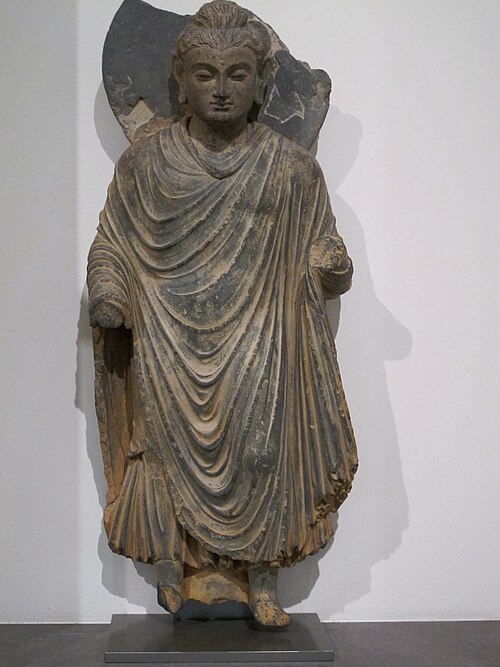
Standing Buddha, Gandhara art (1st–3rd century CE). Photo: Ismoon, Public domain, Wikimedia Commons.
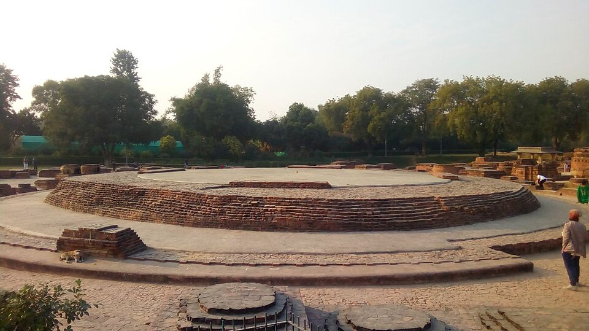
Dhamek Stupa, Sarnath — where the Buddha gave his first sermon. Photo: SpeakingArch, CC BY-SA 4.0, Wikimedia Commons.
Solved questions
P25 Q1e(iv) [2] “Siddhartha denounced extreme asceticism in favour of the Middle Path.” Justify with TWO reasons: (1) after six years of severe fasting his body became so weak he nearly died and he saw that starving the body does not bring wisdom; (2) he realised both luxury (palace life) and self-torture are extremes that fail to end suffering — so he accepted food, regained strength and attained Enlightenment through balance and meditation.
P25 Q7b [2] Illustrate TWO principles I practise daily: (1) Kindness / compassion — I share my lunch with a classmate who has none and look after stray dogs; (2) Equality — I treat all classmates, rich or poor, boys or girls, with the same respect and do not tease anyone. (Humanity: helping a sick neighbour or an old person.)
P25 Q7c [3] THREE ways to live in harmony through Right Action: (1) do not harm or kill any living being — solve disputes peacefully; (2) do not steal or cheat — respect others’ property and be honest; (3) act with care in relationships and help others through community service (volunteering, sharing), avoiding sexual misconduct/intoxicants that hurt others.
P24 Q5a [5] “Animal sacrifice was essential in Vedic religion. Was it a good practice?” No — (1) it causes cruelty and suffering to innocent animals; (2) it wasted valuable cattle needed for farming and milk, harming the economy; (3) it made rituals costly, so poor people were excluded; (4) it raised the priests’ power and caste inequality; (5) it was against non-violence and led to protest movements — Buddhism and Jainism taught ahimsa.
P24 Q4a [5] As prayer captain, FIVE activities to enhance spiritual life in my school: (1) lead morning and evening prayers and the Zhabdrung / Kuenrig prayer; (2) invite a lama or teacher for a Dharma talk; (3) organise meditation sessions; (4) arrange butter-lamp and tshogs offerings on auspicious days (e.g. Lhabab Duchen); (5) clean the lhakhang and plan community-service / animal-release (tshethar) activities. (Also: kora to a nearby temple, choeku, reading scriptures.)
Quick: P24 v B; xv C. P25 xiv D Great Renunciation (not First Sermon = Sarnath; Enlightenment = Bodh Gaya; Mahaparinirvana = death).
Three Jewels: the Buddha, the Dharma (teachings), the Sangha (community of monks).
Buddhism in Bhutan
7th century: Tibetan king Songtsen Gampo built Kyichu (Paro) and Jampa (Bumthang) temples.
8th century (746):Guru Rinpoche came to Bumthang (Sindhu Raja) and spread Vajrayana.
1616: the Zhabdrung made Drukpa Kagyu the state religion.
Four Noble Truths
Truth
Meaning
1 Dukkha
life contains suffering (birth, age, illness, death)
2 Samudaya
suffering is caused by craving and attachment
3 Nirodha
suffering can end (nirvana)
4 Magga
the way is the Eightfold Path (the Middle Path)
The Eightfold Path in daily life
Path
In practice
Right View / Intention
understand the truths; kind, non-harmful thoughts
Right Speech
no lying, gossip or harsh words
Right Action
no killing, stealing or harming others
Right Livelihood
earn by honest work that harms nobody
Right Effort / Mindfulness / Concentration
self-discipline, awareness, meditation
Ashoka & the spread of Buddhism
After the bloody Kalinga war (261 BCE) Emperor Ashoka turned to Buddhism and non-violence (dhamma), carved edicts on rocks and pillars and sent missionaries abroad (including to Sri Lanka).
Buddhism travelled along trade routes to Central Asia, China, Tibet and South-East Asia; later the Vajrayana form reached Bhutan.
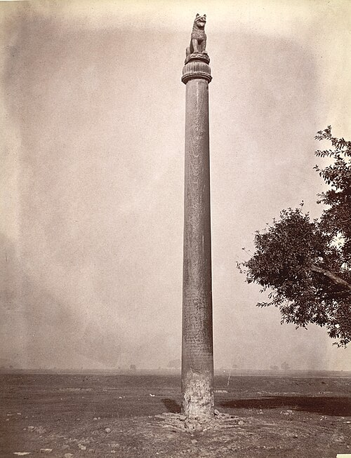
An Ashoka pillar at Lauriya Nandangarh (Bihar), carrying his edicts on dhamma. Photo: Sir Benjamin Simpson, Public domain, Wikimedia Commons.
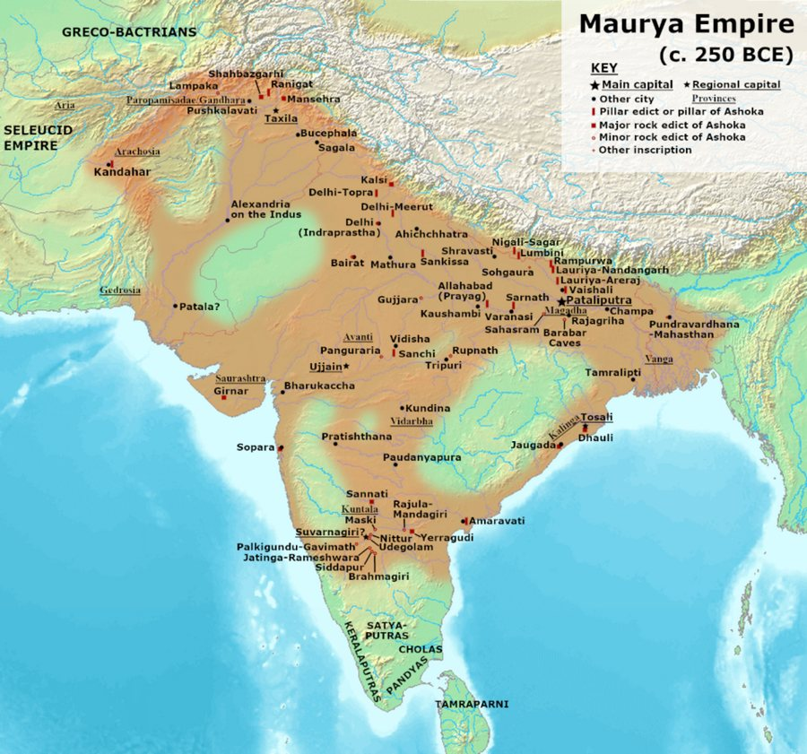
Map: the Maurya Empire under Ashoka, c. 250 BCE. Photo: Avantiputra7, CC BY-SA 3.0, Wikimedia Commons.
Likely questions
Describe the Buddha’s life in five points: birth at Lumbini → Four Sights and Great Renunciation (29) → six years of austerity and the Middle Path → Enlightenment at Bodh Gaya (35) → First Sermon at Sarnath and 45 years of teaching until Mahaparinirvana at Kushinagar (80).
Why did people accept Buddhism? simple teachings in local language, no costly rituals, equality for all castes, non-violence.
3 · The Age of Exploration
P24 Q1a(vi,vii),b(vii),d(iv) · P25 Q1a(xv),c(i,v)
Key ideas
When & who: 15th–17th centuries; pioneers were Portugal and Spain (later Holland, England, France).
Causes (the 3 Gs):God (spread Christianity), Gold (wealth, spices, trade) and Glory (power and fame). The Ottoman capture of Constantinople (1453) blocked the old land routes, so Europe searched for sea routes to Asia. P24 Q1b(vii) (“…as well as for spreading Christianity”).
Equipment used by explorers:map, ship (caravel), compass, astrolabe. The printing press was NOT sailors’ equipment. P24 Q1a(vii): D
Voyages:Dias rounded the Cape of Good Hope (1488); Columbus (Spain) reached the Americas in 1492; Vasco da Gama reached Calicut, India, by sea in 1498; Magellan’s fleet sailed round the world (1519–22).
Effects — positive:globalisation: economic and cultural linksP25 Q1a(xv): D; the Columbian Exchange spread crops (potato, maize, tomato), animals, ideas, technology and goods P25 Q1c(v): d. Columbus; better maps and knowledge. Negative: conquest and colonisation, slave trade, diseases (smallpox) that killed millions of native people, loss of native cultures.
Triangular trade: Europe → West Africa carrying manufactured goods (guns, cloth, iron); Africa → the Americas carrying enslaved Africans (Middle Passage); Americas → Europe carrying raw materials (sugar, cotton, tobacco). P24 Q1a(vi)triangular trade map
Maritime trade conflict: reasons include trade-route control and a growing demand for marine resources (fish, oil, minerals) → TRUEP24 Q1d(iv).
Age of Exploration: key dates.
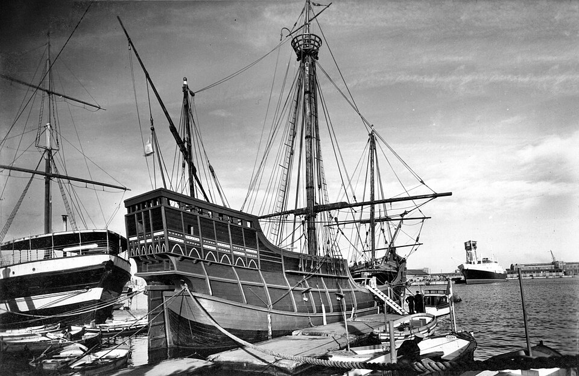
Replica of the Santa María, Columbus’s flagship (1492). Photo: Unknown author, Public domain, Wikimedia Commons.
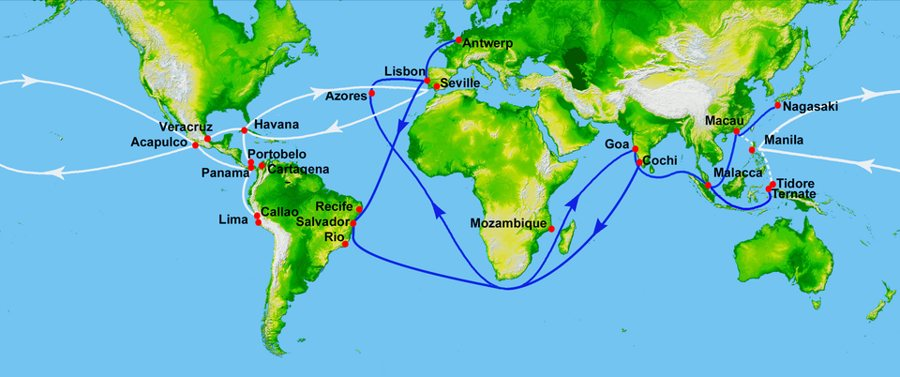
Map: Portuguese and Spanish routes of the Age of Exploration. Photo: World_Topography.jpg: NASA/JPL/NIMA
deri…, Public domain, Wikimedia Commons.The Atlantic triangular trade (correct pairing: X slaves, Y raw materials, Z manufactured goods).
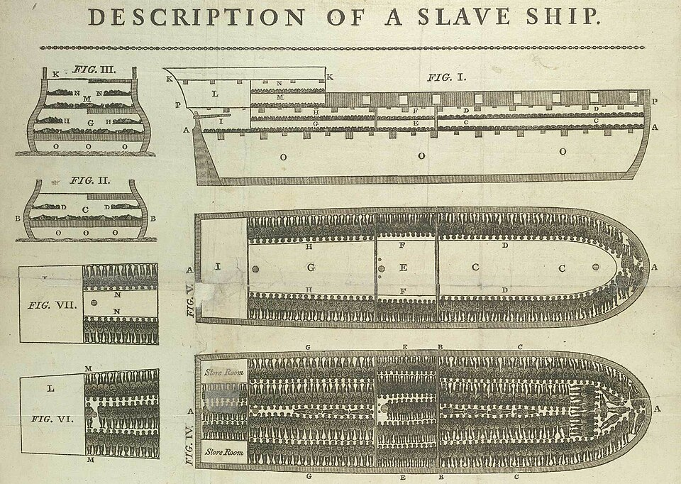
Plan of the slave ship Brookes (1788): enslaved Africans packed below deck. Photo: Printed by James Phillips, George Yard,…, Public domain, Wikimedia Commons.
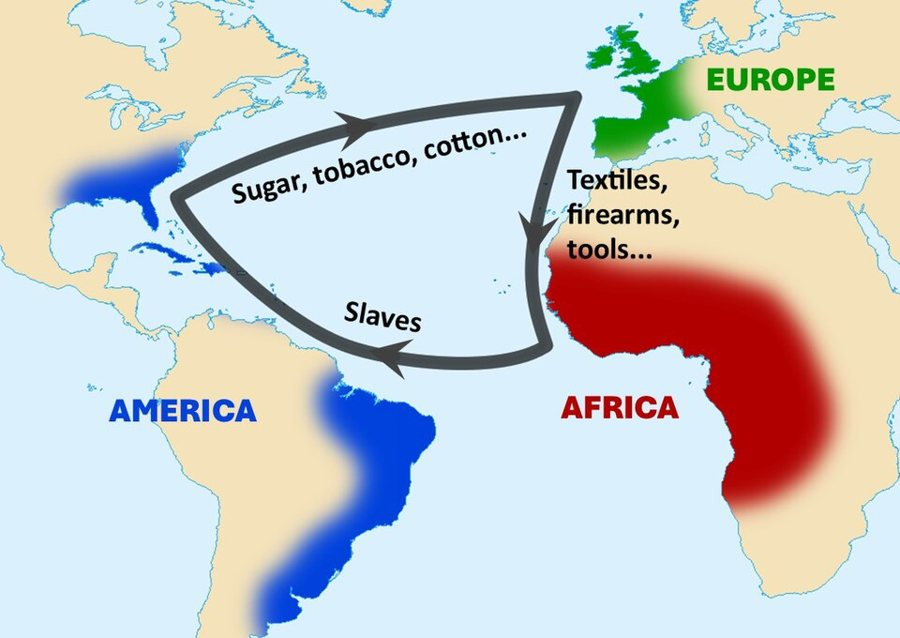
Map: the Atlantic triangular trade. Photo: Jefunky, CC0, Wikimedia Commons.
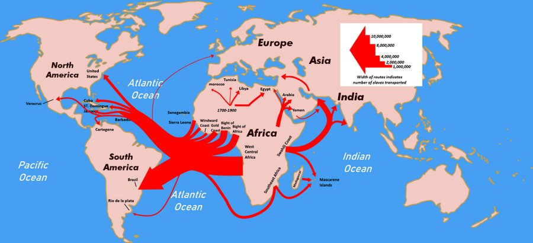
Map: the Atlantic slave trade — arrows show the number of people carried. Photo: KuroNekoNiyah, CC BY-SA 4.0, Wikimedia Commons.
(check) P24 Q1a(vi): the options in the paper do not contain the standard pairing. In the map the arrow Africa→Americas (X) = slaves; this matches only option C (X slaves), so C is the closest. Confirm with your teacher’s key.
Quick answers: P25 c(i) mechanism to involve people… = see Ch 8; c(v) “global trade spread ideas, crops, animals, diseases” → d (Christopher Columbus); a (Vasco da Gama) = sea route to India. P24 vii D.
Who did what
Explorer
Country
Achievement
Prince Henry the Navigator
Portugal
sponsored voyages and navigation school
Bartolomeu Dias
Portugal
rounded the Cape of Good Hope, 1488
Christopher Columbus
Spain
reached the Americas, 1492
Vasco da Gama
Portugal
sea route to India (Calicut), 1498
Pedro Cabral
Portugal
reached Brazil, 1500
Ferdinand Magellan
Spain
expedition that first circled the globe, 1519–22
Cortes / Pizarro
Spain
conquered the Aztec (1521) / Inca (1530s) empires
Effects: positive and negative
Positive
Negative
global trade and cultural links (globalisation)
conquest and colonisation
exchange of crops (potato, maize, tomato) and animals
slave trade of Africans
better maps and scientific knowledge
diseases such as smallpox killed natives
new foods, goods and ideas spread
loss of native cultures and land
4 · Colonialism & Indian Nationalism
P24 Q3c · P25 Q7a
Key ideas
British rise: East India Company (1600) → factories (Surat 1612, Madras, Bombay, Calcutta) → Plassey 1757 and Buxar 1764 → the Diwani (right to collect revenue of Bengal, 1765) → subsidiary alliances and the Doctrine of Lapse → Revolt of 1857 → Crown rule 1858.
Why the Mughals weakened: Aurangzeb’s death (1707), wars of succession, weak emperors, revolts of Marathas, Rajputs, Nawabs; Nadir Shah’s invasion (1739). The emperor’s 1717 farman gave the Company duty-free trade in Bengal.
Colonial rule: heavy land tax, ruin of handicrafts (de-industrialisation), famines, racial discrimination, Indians kept out of high posts.
Rise of nationalism: English education and Western ideas (liberty, equality); newspapers; reformers (Ram Mohan Roy, Arya Samaj); railways and telegraph linking the country; unpopular acts (Partition of Bengal 1905, Rowlatt Act and Jallianwala Bagh 1919). Indian National Congress founded 1885; Gandhi’s non-violent movements; independence 15 Aug 1947.
Indian history under the British: key dates.
Solved questions
P24 Q3c [4] “Colonialism was the main reason behind the rise of Indian nationalism.” Do you agree? Yes, largely. (1) Economic exploitation — high taxes, destruction of handicrafts and famines united people against the British. (2) Political domination and racial discrimination — Indians were denied high posts and rights, so they demanded self-rule. (3) Western education and the press (a colonial creation) taught ideas of freedom and let leaders connect; the Congress was formed in 1885. (4) Oppressive laws (Partition of Bengal, Rowlatt Act, Jallianwala Bagh) turned moderate opinion into mass movements. (Other causes, e.g. social reform, helped but the British rule created the common enemy.)
P25 Q7a [5] As a Mughal Emperor, FIVE measures to stop British colonisation: (1) cancel the duty-free trading farman and tax British goods like other traders; (2) allow no forts or private armies in Company factories and keep ports under Mughal officers; (3) unite the Rajputs, Marathas and Nawabs and end succession wars so the empire speaks with one voice; (4) modernise the army with muskets, artillery and a navy, and pay soldiers regularly; (5) play European powers (French, Dutch, Portuguese) against the British and gather intelligence on their plans.
History = study of the past. Historiography = the study of how history is written (the methods, sources and viewpoints of historians).
Medieval historiography: written by monks, priests and court scribes for religion or rulers; history shown as the will and deeds of God and of kings; mixed with myths, miracles and legends; focus on wars, dynasties, saints; ordinary people ignored. So it is best described as a historical account influenced by religious beliefsP24 Q1a(xi): B. In 2025 blank (e): “…recounting the will of deeds of God and kings / rulers”.
Modern historiography: based on reason, evidence and critical study of sources; objective; many themes (society, economy, women, environment, common people); uses archaeology, science, oral history; includes different schools: romanticist (emotion and imagination, glorifying heroes and the nation) and rationalist (reason and evidence) P24 Q1b(ii): reason / evidenceP25 Q1d(iv): TRUE.
Oral history = first-hand memories of living people about events they saw, collected by interviews (recent past). Oral tradition = stories, songs, proverbs and customs handed down by word of mouth over generations. They are related but not interchangeable → FALSEP24 Q1d(vii).
Humanising history: personal narratives let readers “connect emotionally with the experiences of individuals” and build empathyP25 Q1a(xiii): A. Others: inclusivity and diverse voices, cultural heritage, community building.
Culture:tangible = things you can touch (dzongs, Taktsang, thangkas, textiles, kera shoes); intangible = living practices (mask dances, folk songs, rituals, language, oral literature). P25 Q1a(xii)4 photos(check) I mask dance = intangible; II Taktsang = tangible; III traditional shoes = tangible; IV song/dance group = intangible → both A (I & III) and B (II & IV) pair one of each; B is slightly cleaner (an architectural monument + a performing tradition).
Bhutan must prioritise the promotion and preservation of culture / cultural heritage and traditions in a globalising world P24 Q1b(iv).
Medieval vs modern historiography at a glance.
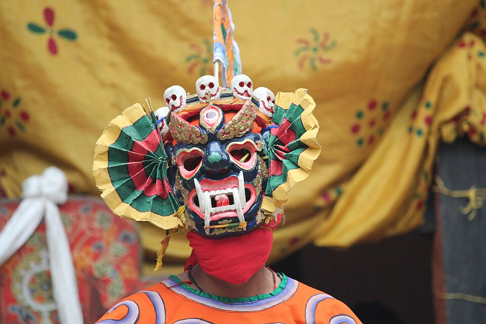
Cham mask dance at a tshechu — intangible cultural heritage. Photo: Arian Zwegers from Brussels, Belgium, CC BY 2.0, Wikimedia Commons.
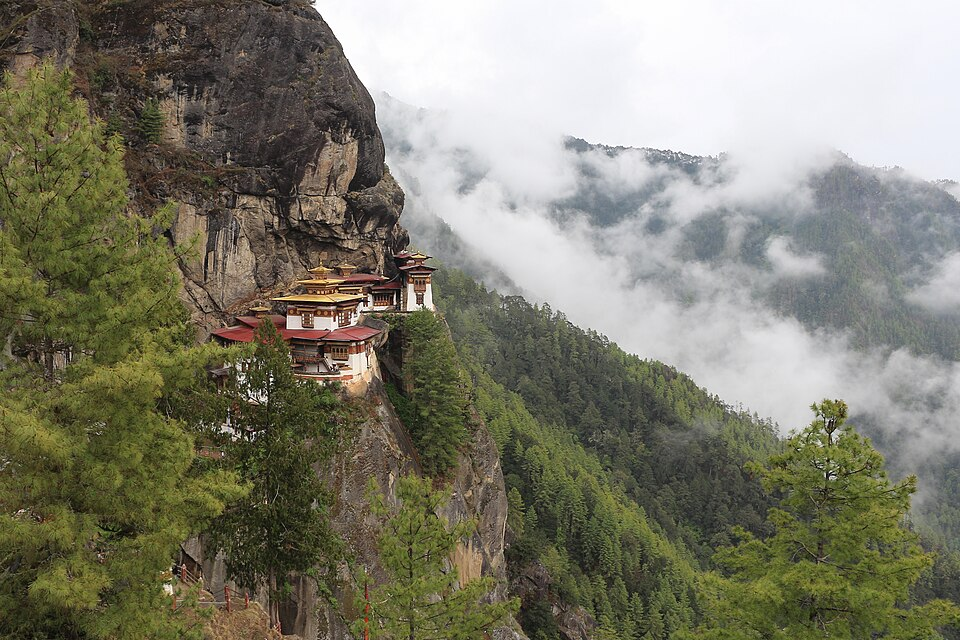
Paro Taktsang (Tiger’s Nest) — tangible cultural heritage. Photo: Bernard Gagnon, CC BY-SA 4.0, Wikimedia Commons.
Solved questions
P24 Q4b [5] FIVE focuses of historical writing in the medieval period: (1) religion and the will of God — events explained as divine plan; (2) kings and rulers, their glory and victories; (3) wars, conquests and dynasties; (4) lives of saints and holy men (e.g. Bhutan’s namthars); (5) myths, miracles and legends written by monks and court scribes to please patrons; common people were ignored.
P25 Q6a [5] Why historians prefer modern over medieval historiography: (1) it is rational and evidence-based, not myth; (2) it is objective, checking facts from many sources; (3) it covers all people — women, workers, minorities — not only kings; (4) it uses science and oral history (archaeology, carbon dating, interviews); (5) it studies cause and effect and offers many viewpoints, so we learn lessons accurately.
Quick: P24 xi B; b(ii) rationalist = reason / evidence; d(vii) FALSE. P25 xiii A; d(iv) TRUE.
Oral history vs oral tradition
Oral history
Oral tradition
Meaning
memories of events a person lived
stories, songs, customs passed through generations
Born at Ralung, Tibet, head of the Drukpa Kagyu; left Tibet after a dispute with the Tsang ruler and arrived in Bhutan in 1616. He built the first dzong (Simtokha, 1629), then Punakha (1637), Wangdue and Paro, and drove back the Tibetan–Mongol invasions (1634, 1639, 1644). Called Palden Drukpa and the Architect of the Nation State because he created a unique national identityP24 Q1a(xiv): B. His death in 1651 was kept secret for decades; his preserved body (Machhen) rests at Punakha Dzong.
Laid the foundation of Bhutan’s emergence as a nation-state despite internal strife P25 Q1c(ii): g. Zhabdrung.
The Choe-sid (Ten-Sid) dual system
Choe = religion; Sid = state. The Je Khenpo heads the monastic body; the Druk Desi runs the civil administration. “Ten-Sid” = the duality of spiritual and secular affairsP25 Q1a(viii): A.
Chogi Chila Namsum = the three Poenlops: Trongsa, Dagana and ParoP24 Q1a(iv): C (not Desi/Je Khenpo, Drongyer etc.). Below them the Dzongpoens.
SignificanceP24 Q2a: balanced spiritual and secular power; kept peace and stability (until 1907); unified valleys under dzong administration; preserved Drukpa Kagyu identity; checks and balances.
The Choe-sid system set up by the Zhabdrung.
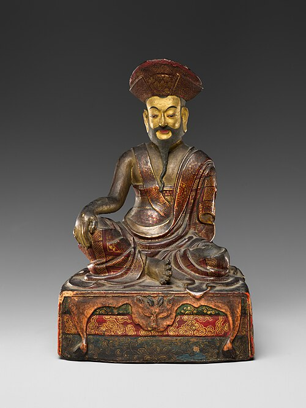
Portrait of Zhabdrung Ngawang Namgyal, unifier of Bhutan. Photo: Unknown, CC0, Wikimedia Commons.
Laws, etiquette & identity
Kathrim (Zhabdrung’s law code): fundamentals Lay-Gyudrey (law of cause and effect/karma), Tha-Damtsig (sacred bond of loyalty) and the ten virtuous acts. They still resonate in modern Bhutanese societyP25 Q1b(d). Kathrim was the supreme law of the 17th century, not of modern times (the Constitution is) → FALSEP25 Q1d(iii).
Two laws of the 17th century: the spiritual law of the silken knot and the secular law of the golden yokeP25 Q1a(vii): B. Later the Thrimzhung Chenmo (1729) codified law.
Driglam Namzha = Bhutanese code of etiquette (dress, conduct, respect) promoted by the Zhabdrung P25 Q1b(c).
Solved questions
P24 Q2a [2] TWO significances of the Choe-sid: (1) it balanced religious and secular authority, preventing misuse of power; (2) it brought unity, peace and stable government to the country for 250 years.
P24 Q1e(iii) [3] What if the Zhabdrung had not codified the Kathrim? (1) No common law — disputes, crime and lawlessness; (2) no unity among valleys, making Bhutan weak against Tibetan invasion; (3) no moral/ethical code (karma, loyalty) and no foundation for later laws (Thrimzhung Chenmo, Constitution) or national identity.
P24 Q6a [3] THREE importance of Kathrim: (1) foundation of the Bhutanese legal system; (2) maintained peace, order and justice through moral principles; (3) unified people and strengthened national identity; it still guides values today.
P24 Q7a [2] TWO factors that led the Zhabdrung to create a unique identity: (1) the need to unite warring valleys and resist Tibetan invasions; (2) a wish to establish a distinct Drukpa Kagyu Buddhist state, separate from Tibet, with its own dress, etiquette, language, dzong architecture and festivals.
P25 Q2a [5] How the Zhabdrung promoted social cohesion through a strong national identity: (1) one religion — Drukpa Kagyu — for all; (2) Kathrim, a common law; (3) Driglam Namzha: shared dress, etiquette and conduct; (4) dzongs as common centres of administration, rituals and festivals (tshechus); (5) Choe-sid government and victory over Tibetan invasions made people feel one nation.
Zhabdrung’s achievements
Area
What he did
Political
unified valleys; Choe-sid government; 3 regions under Poenlops
Punakha Dzong (1637), founded by the Zhabdrung at the meeting of the Pho Chhu and Mo Chhu. Photo: Bernard Gagnon, CC BY-SA 4.0, Wikimedia Commons.
Dzongs: why they matter
Dzong
Founded
Simtokha
1629 (first dzong)
Punakha
1637
Wangdue Phodrang
1638
A dzong is a fortress, monastery and administrative centre in one: it defended the valley, held monks and officials, and hosted tshechus — the visible sign of Choe-sid.
7 · Bhutan & British India: Treaties
P24 Q1a(iii,x),c,d(iii),Q3b · P25 Q1a(iv,x),b(a),Q2(case study b–d),Q3b
Bhutan–British India–India: key dates.
Timeline & treaties
Year
Event / terms
1772–74
Cooch Behar war under Desi Zhidar (16th Desi); the Raja asked the British for help; Bhutan lost. Desi Kunga Rinchen (17th, succeeded Zhidar) asked the Panchen Lama to mediate → Treaty of 25 April 1774 with Warren Hastings: first treaty, peace.
1775 (May)
George Bogle’s treaty: Bhutanese traders free of duty at Rangpur, caravans allowed to trade across Bengal, trading rights for goods such as sandalwood and betel-nut. The British opening a trade agent in Bhutan was not a gain for Bhutan P25 Q1a(x): B.
1783
Samuel Turner mission; met Desi Jigme Sengye; his diaries gave Britain political information P24 Q1c(iii).
1864
Ashley Eden mission to Punakha was humiliated and forced to sign; Britain annexed Ambari Falakata and declared war on 12 Nov 1864 (Duar War). Had Eden succeeded: no war, so the Assam and Bengal Duars would not have been annexedP24 Q1a(iii): C.
11 Nov 1865
Treaty of Sinchula: Bhutan ceded the Assam Duars, Bengal Duars and Dewangiri (about a fifth of its land) for an annual payment (Rs 25,000, rising to Rs 50,000); peace and friendship established P25 Q1a(iv): D. Led by Trongsa Poenlop Jigme NamgyelP24 Q1c(iv): a.
1903–04
Younghusband expedition to Tibet (British fear of Russia). Ugyen Wangchuck mediated successfully → Anglo-Tibetan Treaty 7 Sept 1904; KCIE 1905.
1907
Ugyen Wangchuck crowned first Druk Gyalpo (17 Dec).
1910
Treaty of Punakha: subsidy raised to Rs 100,000; Bhutan “guided” by Britain in external affairs; Britain not to interfere internally. (Not the first treaty → 2024 d(iii) FALSE.)
1949
Treaty of Friendship with independent India: Rs 500,000 compensation, 32 sq. miles at Dewathang returned, non-interference.
2007
Revised treaty: Bhutan no longer has to be guided by India in external relations → greater autonomy in managing its foreign affairsP24 Q1a(x): D.
Matching P24 Q1c
Column I
Ans
i. Fought personally against British-India but later exiled
b Desi Zhidar (check)
ii. Asked the Panchen Lama to mediate; Anglo-Bhutanese treaty
d Desi Kunga Rinchen
iii. Received Turner’s mission, diaries
f Desi Jigme Sengye
iv. Led the Duar War, Sinchula
a Trongsa Poenlop Jigme Namgyel
v. Mediated between Tibet and British India
c Ugyen Wangchuck
Solved questions
P25 Q1b(a) [1] …Ugyen Wangchuck communicated with the Tibetan authorities to negotiate with the British (Younghusband).
P25 Q2(b) [1] How Ugyen Wangchuck’s leadership inspires me to resolve disputes: by staying calm, listening to both sides and using patient dialogue (not force) — as he met Colonel Younghusband in person at Chumbi.
P25 Q2(c) [2] Applying his diplomacy today: (1) neutral mediation and dialogue to settle conflicts peacefully (e.g. UN talks); (2) building trust with both sides and keeping communication open, then moving step by step to a written agreement.
P25 Q2(d) [2] Long-term effects: (1) strong, trusting ties with British India, raising Bhutan’s standing and protecting its independence; (2) it strengthened the Wangchuck family, leading to the monarchy in 1907 and treaties in 1910 that continued friendship.
P25 Q3(b) [5] As an advisor, improve relations using the 2007 treaty autonomy: (1) open more embassies and strengthen diplomacy; (2) join international organisations (UN, BIMSTEC, SAARC); (3) widen trade and hydropower/tourism markets beyond one country; (4) cultural and GNH diplomacy — exchange programmes, scholarships; (5) keep close friendship with India while cooperating on climate and regional security.
P24 Q3b [3] As the 16th Desi Zhidar betrayed by allies in the conflict (Cooch Behar): (1) seek peace through a respected mediator (the Panchen Lama) and negotiate a treaty; (2) rebuild unity at home — reconcile officials, test the loyalty of allies and reward the faithful; (3) strengthen defence and avoid over-extension — guard the passes and keep trade open so the British have fewer reasons to fight.
The Duar War: cause-and-effect chain.
Likely questions
Causes of the Duar War: border disputes and raids in the Duars; British wish for the fertile Duars (revenue, tea, route to Tibet); the failed Eden mission.
Effects of Sinchula: Bhutan lost the Duars and Dewangiri (about a fifth of its land) but gained a yearly payment and peace.
Why did the British support Ugyen Wangchuck? He proved a skilled mediator in 1904; he later became the stable ruler of a united Bhutan (1907).
Jigme Namgyel (Trongsa Poenlop, 1825–81) strengthened Trongsa’s power. His son Ugyen Wangchuck united the country, mediated for Britain (1904) and was elected first Druk Gyalpo on 17 Dec 1907 (National Day).
2nd King Jigme Wangchuck (1926–52). 3rd King Jigme Dorji Wangchuck (1952–72), “Father of modern Bhutan”: National Assembly (1953), end of serfdom, Five Year Plans from 1961, High Court, UN membership 1971.
The Third Five Year Plan (1971–76: communications, irrigation, health, education, agriculture) was chaired by Prince Jigme Singye WangchuckP25 Q1a(ii): B.
The five Kings of Bhutan.
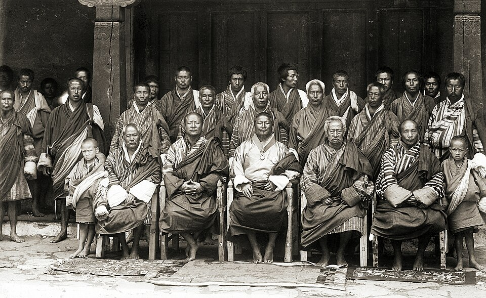
Sir Ugyen Wangchuck with his councillors at Punakha, 1905 — the first Druk Gyalpo. Photo: John Claude White, Public domain, Wikimedia Commons.
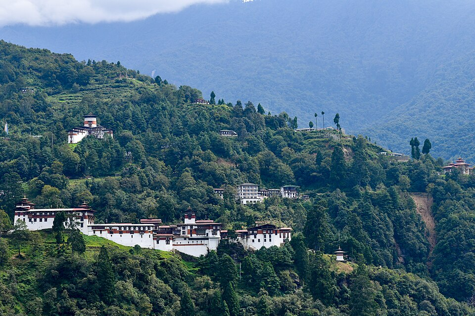
Trongsa Dzong — seat of the Trongsa Poenlops, from where the Wangchuck family rose. Photo: Christopher J. Fynn, CC BY-SA 4.0, Wikimedia Commons.
The Fourth Druk Gyalpo
Born 11 Nov 1955 at Dechencholing, Thimphu. He ascended the throne on 24 July 1972 aged 16; he was formally enthroned/crowned on 2 June 1974P24 Q1a(i): A. On 16 June 1972 he was appointed Trongsa Poenlop and received the red scarf (Kabney) → TRUEP24 Q1d(i)(check).
Gross National Happiness (GNH) — wellbeing above GDP. Decentralisation:Dzongkhag Yargay Tshogdu (1981) and Gewog Yargay Tshogchung (1991) — the mechanism to involve people in grassroots decision-makingP25 Q1c(i): c. Fourth DG.
Operation All Clear (Dec 2003): after years of talks, His Majesty personally led the army to remove militant camps (ULFA, NDFB, KLO) from southern Bhutan — with minimal damage. P25 Q1e(iii)P24 Q6c
Democracy: started drafting the Constitution (2001); abdicated on 9 Dec 2006 in favour of the Crown Prince — before the people demanded change.
Milestones of the Fourth Druk Gyalpo’s reign.The Fourth Druk Gyalpo, Jigme Singye Wangchuck. Photo: U.S. Department of State, Public domain, Wikimedia Commons.
Solved questions
P25 Q3a [5] Why the Fourth Druk Gyalpo is a “Selfless Leader”: (1) in 2003 he led the troops personally from the front, risking his life for the nation; (2) he voluntarily abdicated in 2006 and gave up power; (3) he gave democracy and the Constitution as a gift, not under pressure; (4) he made GNH the aim — wellbeing of people over personal wealth; (5) he decentralised power to the people and travelled to remote villages, serving rather than ruling.
P25 Q4a [5] Speech: FIVE key aspects of his leadership/legacy: (1) GNH philosophy; (2) decentralisation and democracy (DYT/GYT, Constitution); (3) environmental conservation — 60% forest cover for all time; (4) national security — Operation All Clear 2003; (5) socio-economic development & culture — hydropower, schools, hospitals and preservation of tradition — capped by his selfless abdication.
P24 Q6c [4] Inspiration from his selfless leadership in 2003: (1) put the nation before self — I should serve my school/community before my comfort; (2) lead by example and be present in difficult times; (3) prepare carefully and choose peace first (talks before force) — solve conflicts patiently; (4) be ready to sacrifice time and personal gain for others’ safety and happiness.
P25 Q1e(iii) [2] TWO lessons from the 2003 military operation: (1) dialogue and patience first, force as last resort — militants were given time to leave peacefully; (2) strong leadership with careful planning and unity — the King led from the front, trained the forces and united the people, so the mission succeeded with few casualties.
P24 Q3a [3](check — textbook-specific) Prophetic elements around the birth of the Fourth Druk Gyalpo: (1) he was born into the Wangchuck line foretold by the prophecies of Guru Rinpoche/Pema Lingpa to protect Bhutan’s Dharma; (2) auspicious signs and dates accompanied the birth at Dechencholing (11 Nov 1955); (3) lamas confirmed that he would become a great protector and leader. Use the exact signs listed in your textbook.
The Third King: modernisation
Year
Step
1953
National Assembly (Tshogdu) set up
1956
land reform; serfdom abolished
1961
First Five Year Plan; Thimphu capital
1968
High Court and Council of Ministers
1971
Bhutan joins the United Nations
Fourth King: reign in brief
1972: ascends the throne at 16. 1974: coronation.
1981 / 1991: Dzongkhag and Gewog development committees (DYT, GYT).
1998: hands over executive power to the Council of Ministers.
2001–05: Constitution drafted. 2003: Operation All Clear. 2006: abdication.
His Majesty Jigme Khesar Namgyel Wangchuck, the Fifth Druk Gyalpo. Photo: Royal Family of Bhutan, CC BY-SA 3.0, Wikimedia Commons.
Born 21 Feb 1980. Education: Bhutan, then Phillips Academy (Andover), Wheaton College (USA) and Magdalen College, Oxford (foreign service programme) — gave global exposure, languages and understanding of world affairs. P25 Q1e(i)
Installed as the 16th Trongsa Poenlop on 31 Oct 2004; Fifth Druk Gyalpo on 9 Dec 2006; coronation 2008. At Punakha he received the Dar Kha Nga from Machhen — the blessings of the ZhabdrungP25 Q1a(vi): B; the ceremonies at Punakha (protector of Chhoe) and at Tashichhodzong (protector of Sid) → TRUEP24 Q1d(ii).
Royal wedding:13 Oct 2011 at Punakha Dzong → TRUEP25 Q1d(v). Gyalsey Jigme Namgyel Wangchuck born in the Fire-Monkey year 2016; the Druk Gyalpo (Iron Monkey, 1980) and Gyalsey were both born in a Monkey year that is also a leap yearP24 Q1b(vi).
As Crown Prince: opened the Zilukha school fete, addressed the Japan Day celebrations, presided over the passing-out of Royal Bodyguards and opened the first juvenile rehabilitation complex at Tsimalakha. Correct order: B (I, III, II, IV)P25 Q1a(iii)(check).
Ceremony:Zhugdrel Phuensum Tshogpa (prelude at all levels of celebration) symbolises the unity and nationhood of BhutanP25 Q1a(i): A.
His Majesty’s programmes
Initiative
What it does
Kidu
Royal welfare: land, housing, scholarships, medical help, disaster relief; reaches remote people. P24 Q7c
Desuung (2011)
“Guardians of Peace”: volunteer training in service, discipline, skills.
Gyalsung
Announced 17 Dec 2019; one-year compulsory training for 18-year-olds; first batch 2024. P25 Q1c(iii): e. Druk Gyalpo (P25 Q1d(ii) TRUE)
Patron of the Bhutan Red Cross Society: alleviate human suffering during emergencies and disastersP25 Q1a(ix): C.
Gyalyum Sangay Choden
Women empowerment — RENEW, Royal Textile Academy.
Gyalyum Dorji Wangmo
Poverty alleviation — Tarayana Foundation P24 Q1a(xii): C(check).
Gyalyum Tseyring Pem
Youth: Golden Youth Award (with the Bhutan Youth Development Fund) → youth values, culture, sports P25 Q1c(iv): b(check).
Solved questions
P25 Q1e(i) [2] How his education prepared him: (1) studied in the USA and UK (Andover, Wheaton, Oxford), gaining global exposure and knowledge of world affairs/diplomacy; (2) he combined this with Bhutanese schooling and values, so he can lead the country while understanding modern challenges.
P25 Q1e(ii) [2] His Majesty’s disaster relief builds trust: (1) after the 2009 eastern earthquake and the 2012 Wangdue Phodrang Dzong fire His Majesty visited victims and granted Kidu for housing and rebuilding; (2) during COVID-19 His Majesty led the national response and provided Royal Kidu relief (income/loan support) to the affected people.
P24 Q2c [4] Grooming of Crown Prince Jigme Khesar for kingship — FOUR evidences: (1) education abroad (Andover, Wheaton, Oxford); (2) installed as Trongsa Poenlop (2004); (3) represented His Majesty at national and public events (fete days, Japan Day, passing-out ceremony, juvenile centre); (4) toured the dzongkhags, meeting villagers and learning their needs, and received gradual responsibility from the Fourth King before 2006.
P24 Q5b [5] His Majesty’s youth programmes I find most inspiring: (1) Gyalsung — trains every 18-year-old in service and values; (2) Desuung — volunteering and discipline; (3) Kidu for education (scholarships, help for poor students); (4) His Majesty’s audiences and Golden Youth/leadership events that motivate young leaders; (5) youth employment and skills programmes (e.g. YELP) and the Gelephu Mindfulness City creating future jobs.
P24 Q7c [4] Expressing gratitude for the Kidu: (1) study hard and become a useful citizen; (2) serve the community/volunteer and help others as the Kidu helps me; (3) be honest, obey laws and protect the environment; (4) pray for His Majesty’s long life and pass on the Kidu spirit by giving back when I can.
P25 Q4b [5] FIVE events where His Majesty shares moments with the people: (1) National Day, 17 December; (2) Dochula Druk Wangyal Tshechu; (3) Royal Highland Festival, Laya; (4) Black-Necked Crane Festival, Phobjikha; (5) the Thimphu/Punakha tshechus and domchoe (dancing and addressing the people).
Quick: P24 ii B (check); ix B (Bhutan Kidney Foundation = Civil Society Organisation); xii C (check); b(vi) leap. P25 iii B (check); vi B; ix C; c(iii) e; c(iv) b.
Drafted from 2001 by a committee led by Chief Justice Sonam Tobgye after nationwide consultation; draft shared in 2005; enacted 18 July 2008. It is the supreme law of modern times, drafted under the Royal Command (compare Kathrim).
The Druk Gyalpo is the Head of State and symbol of unity of the Kingdom and the people; he does not preach any religion or represent any party — “the embodiment of the Constitution” P25 Q1a(v): D(check).
Three branches: Legislature (Parliament: National Council + National Assembly), Executive (Lhengye Zhungtshog), Judiciary. Commanding that a bill be deliberated in Parliament is a legislative matter, not an exercise of executive role → FALSEP24 Q1d(vi)(check).
GNH is a principle of State policy: four pillars (sustainable and equitable development, environment conservation, culture, good governance). GNH assesses development by material and spiritual progress together → TRUEP25 Q1d(i).
Government structure under the Constitution.
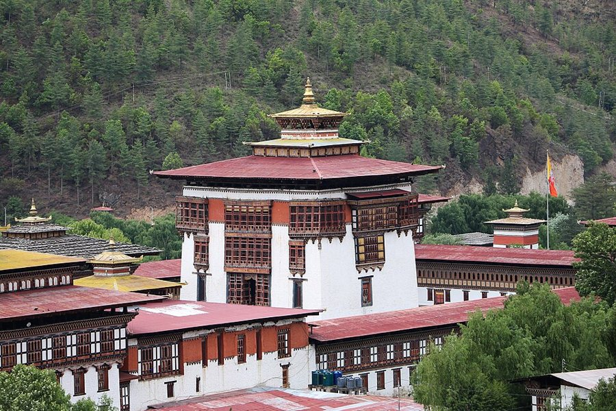
Tashichho Dzong, Thimphu — seat of the government and the throne room. Photo: Bernard Gagnon, CC BY-SA 4.0, Wikimedia Commons.Gross National Happiness: four pillars.
Environment — Article 5
Every Bhutanese is a trustee of the Kingdom’s natural resources and environment for present and future generations → TRUEP24 Q1d(v); it is the fundamental duty of every citizen to protect the environment, conserve biodiversity and prevent ecological degradation (noise, visual and physical pollution), by adopting eco-friendly practices and policies.
The Government must protect, conserve and improve the environment, prevent pollution, and keep at least 60% of the land under forest cover for all time. Parliament enacts environmental legislation.
Flow chart box XP25 Q1a(xi): the paper’s chart lists Trustee, Government responsible, Legislation by Parliament; X = declared Protected Areas / forest-cover commitment → A(check). Bhutan has about 51% of its land in protected areas and is carbon negative.
To strengthen the environment an individual should educate family and friends on its importance for sustainability P24 Q1a(viii): D.
The 2025 flow chart: Significance of Environment.
Solved questions
P24 Q7b [4] What makes Bhutan’s Constitution different? (1) It was drafted on the initiative of the King, not demanded by revolution, after consulting the people; (2) GNH is a guiding principle of State policy; (3) it requires 60% forest cover for all time and makes every citizen an environmental trustee; (4) monarchy rules: the Druk Gyalpo retires at 65 and can be removed by Parliament; also religious institutions and personalities remain above politics.
P25 Q5(a) [2] Citizens’ responsibilities (Art. 5.1): (1) protect the natural environment and conserve Bhutan’s rich biodiversity as a trustee for future generations; (2) prevent all forms of ecological degradation including noise, visual and physical pollution by following environment-friendly practices and policies.
P25 Q5(b) [3] THREE strategies for protecting biodiversity: (1) keep and expand forest cover (60%) by plantation and strict forest laws; (2) strengthen protected areas and biological corridors and community forestry; (3) promote clean energy/electric vehicles, waste management and eco-tourism, with awareness and environment impact assessment of projects.
Articles to know
Art.
Subject
1
The Kingdom
2
Institution of Monarchy
3
Spiritual heritage
4
Culture
5
Environment
6
Citizenship
7
Fundamental rights
8
Fundamental duties
9
Principles of State policy (GNH)
Roles of the Druk Gyalpo
Head of State; symbol of unity of the Kingdom and people; Supreme Commander of the armed forces; protector of all religions; may grant amnesty (acts above party politics).
11 · Civil Society, Community & Everyday Life
P24 Q1a(ix),b(iv,v),e(ii) · P25 Q1a(i),Q5c
Key ideas
Civil Society Organisations (CSOs) are non-profit, non-government groups that work for public welfare, e.g. RENEW (women), Bhutan Kidney Foundation, Tarayana, RSPN, Draktsho. The BKF logo represents a Civil Society OrganisationP24 Q1a(ix): B.
CSOs are meant to be non-political and registered under the CSO Act (2007) to keep neutrality and public trust.
A victim of domestic abuse receives support from RENEW / the National Commission for Women and Children (NCWC) and the police Women and Child Protection Unit P24 Q1b(v)(check wording).
Self-help mechanisms in villages — neighbours helping with house building, rice planting and harvest by sharing labour — build community vitality and cut costs. P25 Q5c4 photos
Solved questions
P24 Q1e(ii) [2] Should CSOs engage in political activities? No — (1) the CSO Act requires CSOs to be non-political; (2) political involvement would destroy neutrality and public trust, divide society and shift focus from welfare services to party interests.
P25 Q5(c) [1+4] Public awareness campaign on traditional self-help. Theme:“Together We Build — Self-Help Strengthens Communities.”Four messages: (1) “Many hands make light work” — sharing labour (house building, farming) saves money and time; (2) “Help today, help tomorrow” — reciprocity builds trust and security in need; (3) “Keep our culture alive” — self-help is part of Bhutanese tradition and identity; (4) “Strong communities, happy lives” — it supports GNH and fights loneliness in town life.
Examples of CSOs
CSO
Focus
RENEW
women, victims of abuse
Bhutan Kidney Foundation
kidney patients
Tarayana
rural poverty alleviation
RSPN
nature conservation
Community vitality is one of the nine GNH domains: trust, volunteering and mutual help (self-help, woola).
Culture & identity
Bhutan’s identity rests on language (Dzongkha), national dress (gho/kira), Driglam Namzha, dzong architecture, festivals (tshechus) and Buddhism.
Preserving culture (youth): wear the national dress, learn Dzongkha and traditional arts (Zorig Chusum), attend festivals, record elders’ stories (oral history), respect elders and protect heritage sites.
The Constitution (Art. 4) asks the State to preserve, protect and promote the cultural heritage, including monuments, places and objects of artistic or historic interest, and living traditions.
Likely questions
Why should CSOs stay out of politics? neutrality, trust, focus on welfare.
How does self-help help communities? saves cost, builds trust, keeps traditions, helps in emergencies.
How can you contribute to GNH? volunteer, protect nature, preserve culture, practise good citizenship.
Section A answer key — 2025 & 2024
every MCQ, blank, match and true/false in one place · (check) = reasoned answer, confirm with your key
2025 Paper — Q1(a) MCQ [15]
No.
Ans
Why (short)
i
A
Zhugdrel Phuensum Tshogpa = unity and nationhood of Bhutan
ii
B
3rd Five Year Plan chaired by Prince Jigme Singye Wangchuck
iii
B (check)
I, III, II, IV order of the Crown Prince’s activities
iv
D
Sinchula 1865: peace and friendship established
v
D (check)
Druk Gyalpo = embodiment of the Constitution / unity
vi
B
Dar Kha Nga from Machhen = blessings of the Zhabdrung
vii
B
spiritual law of silken knot, secular law of golden yoke
viii
A
Ten-Sid = duality of spiritual and secular affairs
ix
C
Red Cross: alleviate suffering in emergencies and disasters
x
B
British opening a trade agent in Bhutan did not benefit Bhutan
xi
A (check)
box X = declared Protected Areas / forest cover
xii
B (check)
II Taktsang (tangible) + IV performance (intangible); A also possible
xiii
A
Humanising history
xiv
D
Great Renunciation
xv
D
Globalisation: economic and cultural links
2025 — (b) blanks, (c) match, (d) T/F
Part
Answers
(b) a
the British
(b) b
national priority / commitment
(b) c
Driglam Namzha
(b) d
society (values / legal system)
(b) e
kings / rulers
(c) i–v
i c (Fourth DG) · ii g (Zhabdrung) · iii e (Druk Gyalpo Jigme Khesar) · iv b (Gyalyum Tseyring Pem) (check) · v d (Columbus)
(d) i–v
i TRUE · ii TRUE · iii FALSE (Kathrim was 17th-century law; the Constitution is the supreme law) · iv TRUE · v TRUE
2024 Paper — Q1(a) MCQ [15]
No.
Ans
Why (short)
i
A
enthroned 2 June 1974
ii
B (check)
Highland Festival = economic / livelihood initiative (A social possible)
iii
C
Eden success → no war → Duars not annexed
iv
C
Chogi Chila Namsum = Trongsa, Daga, Paro Poenlops
v
B (check)
Buddha = Awakened One (D also used)
vi
C (check)
triangular trade: X slaves (matches only C)
vii
D
printing press not explorers’ equipment
viii
D
educate family and friends about the environment
ix
B
Bhutan Kidney Foundation = Civil Society Organisation